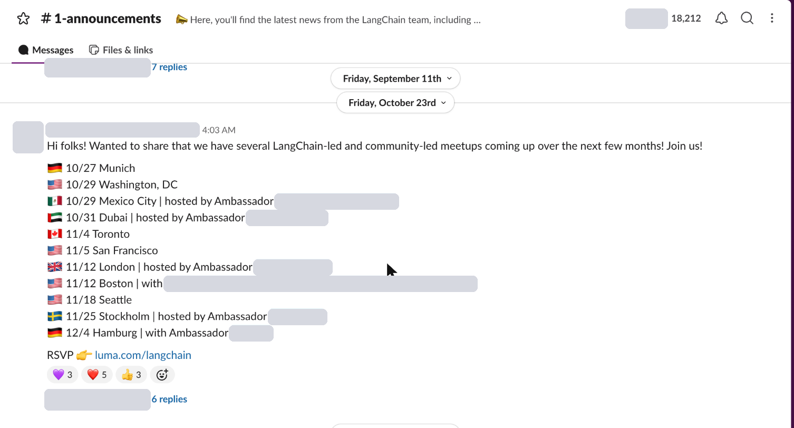

LOADING THE MOUNTAIN
a mini game byAliMuthuAh Hock
THE DAILY CLIMB
7 questions · 30 seconds each · score 80% to reach the summit
0 / 700
DID YOU KNOW
TODAY'S CLIMB
· / pts
Every valid answer, what it is worth right now, and what it is.
A new climb opens tomorrow.
3D models: "Mountain #1" by Helindu and "Stylized Coffee Shop" by ottobite, both on Sketchfab, licensed CC BY 4.0.
Every night, AI reads what the company has been talking about and building, and turns it into tomorrow's seven questions. For this hackathon the company Slack is off limits, so today's questions were written by hand; the examples below show the automatic pipeline on a public Slack and mock data.

AI spots a list of things people could name↓
Name a city hosting an upcoming LangChain meetup.
The AI sorts the answers into three levels, common, rare and very rare, when it writes the question. An answer only counts if it appears word for word in the messages, so the AI cannot make one up.
Melissa Tue 3:20 PMLOST: Daniel Lim left his brown leather wallet on the pantry counter next to the coffee machine. Finder gets a teh tarik.
Imran Tue 4:02 PMMore pantry losses this week: Priya Menon lost her blue umbrella, Kenji Ooi his access card, Hannah Chew her AirPods case and Farid Hakim his Stanley tumbler.
Melissa Wed 9:10 AMUpdate: the wallet was found inside the fridge, in the egg tray. Nobody knows why.
AI turns the gossip into a question↓
Name someone who lost something at the pantry this week.
Most questions are this kind: name any one of them and you score the full 100. Typing just "Daniel" works, and "Danial" gets a "Did you mean Daniel Lim?"
Counts who and what shipped, no AI needed↓
Name a repository that merged a pull request this week.
Questions from Bitbucket are counted straight from the data: which repositories shipped, who merged, what is being built.
You get a "did you know" line about your answer and about one you did not give. That is where the learning happens. Reach 80% of the points and you are on the summit.
The first screen is a real screenshot of the public LangChain Community Slack. The #pantry channel and the Bitbucket list are mock-ups, and the points shown are examples.